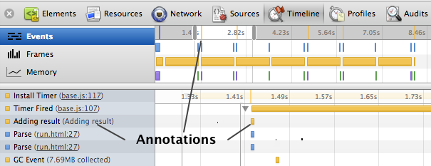
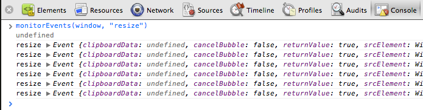

The JavaScript Console provides two primary functions for developers testing web pages and applications:
- A place to log diagnostic information using methods provided by the Console API, such as console.log(), or console.profile().
- A shell prompt where you can enter commands and interact with the document and the Chrome DevTools. You can evaluate expressions directly in the Console, and can also use the methods provided by the Command Line API, such as $() command for selecting elements, or profile() to start the CPU profiler.
This documentation provides an overview and common uses of these two APIs. You can also browse the Console API and Command Line API reference guides.
Basic operation
Opening the Console
The JavaScript Console is available in two modes within Chrome DevTools: the primary Console tab, or as a split-view you can display while on another tab (such as Elements or Sources).
To open the Console tab, do one of the following:
- Use the keyboard shortcut Command - Option - J (Mac) or Control -Shift -J (Windows/Linux).
- Select View > Developer > JavaScript Console.

To toggle a split-view of the Console on another tab, press the Esc key on your keyboard, or click the Show/Hide Console button in the bottom left corner of the Chrome DevTools window. In the following screenshot the Console split-view is shown with the Elements panel.
Clearing the console history
To clear the console's history, do one of the following:
- Right-click or Ctrl-click anywhere in the Console and choose Clear Console from the context menu that appears.
- Enter the clear() Command Line API at the shell prompt.
- Invoke console.clear() Console API from JavaScript.
- Use the keyboard shortcut ⌘K or ⌃L (Mac) Control - L (Windows and Linux).
By default, the console history is cleared when you navigate to another page. You can change this behavior by enabling Preserve log upon navigation in the Console area of the Settings dialog (see Console preferences).
Console settings
The Console has two global settings you can modify in the General tab of the DevTools Settings dialog:
- Log XMLHTTPRequests—determines if each XMLHTTPRequest is logged to the Console panel.
- Preserve log upon navigation—determines if console history for the current page is preserved when you navigate to another page. By default, both of these settings are disabled.
You can also change these settings by right-clicking anywhere in the Console to bring up the context menu.
Using the Console API
The Console API is collection of methods provided by the global console object defined by DevTools. One of the API's main purposes is to log information (such as a property value, or an entire objects or DOM element) to the console while your application is running. You can also group output visually in the console to reduce visual clutter.
Writing to the console
The console.log() method takes one or more expressions as parameters and writes their current values to the console. For example:
var a = document.createElement('p');
a.appendChild(document.createTextNode('foo'));
a.appendChild(document.createTextNode('bar'));
console.log("Node count: " + a.childNodes.length);
Instead of concatenating expressions together with the "+" operator (as shown above), you can put each in its own method parameter and they will be joined together in a space-delimited line.
console.log("Node count:", a.childNodes.length, "and the current time is:", Date.now());
Errors and warnings
The console.error() method displays a red icon along with the message text, which is colored red.
function connectToServer() {
console.error("Error: %s (%i)", "Server is not responding",500);
}
connectToServer();
The console.warn() method displays a yellow warning icon with the message text.
if(a.childNodes.length < 3 ) {
console.warn('Warning! Too few nodes (%d)', a.childNodes.length);
}
Assertions
The console.assert() method conditionally displays an error string (its second parameter) only if its first parameter evaluates to false. For instance, in the following example an error message is written to the console only if the number of child nodes belonging to the list element is greater than 500.
console.assert(list.childNodes.length < 500, "Node count is > 500");
Filtering console output
You can quickly filter console output by its severity level--errors, warning, or standard log statements--by selecting one of the filter options along the bottom of the Console, as shown below.
Filter options:
- All—Shows all console output.
-
Errors—Only show output from
console.error() -
Warnings—Only show output from
console.warn() -
Logs—Only show output from
console.log(),console.info()andconsole.debug(). -
Debug—Only show output from
console.timeEnd()and other console output.
Grouping output
You can visually group related console output statements together in the console with the console.group() and groupEnd() commands.
var user = "jsmith", authenticated = false;
console.group("Authentication phase");
console.log("Authenticating user '%s'", user);
// authentication code here...
if (!authenticated) {
console.log("User '%s' not authenticated.", user)
}
console.groupEnd();
You can also nest logging groups. In the following example a logging group is created for the authentication phase of a login process. If the user is authenticated, a nested group is created for the authorization phase.
var user = "jsmith", authenticated = true, authorized = true;
// Top-level group
console.group("Authenticating user '%s'", user);
if (authenticated) {
console.log("User '%s' was authenticated", user);
// Start nested group
console.group("Authorizing user '%s'", user);
if (authorized) {
console.log("User '%s' was authorized.", user);
}
// End nested group
console.groupEnd();
}
// End top-level group
console.groupEnd();
console.log("A group-less log trace.");

To create a group that is initially collapsed, use console.groupCollapsed() instead of console.group(), as shown below:
console.groupCollapsed("Authenticating user '%s'", user);
if (authenticated) {
...
}

String substitution and formatting
The first parameter you pass to any of the console's logging methods (log() or error(), for example) may contain one or more format specifiers. A format specifier consists of a % symbol followed by a letter that indicates the formatting that should be applied to the inserted value (%s for strings, for example). The format specifier identifies where to substitute a value provided by a subsequent parameter value.
The following example using the %s (string) and %d (integer) formatters to insert values into the output string.
console.log("%s has %d points", "Sam", "100");
This would result in "Sam has 100 points" being logged to the console.
The following table lists the supported format specifiers and the formatting they apply:
| Format specifier | Description |
|---|---|
%s |
Formats the value as a string. |
%d or %i
|
Formats the value as an integer. |
%f |
Formats the object as a floating point value. |
%o |
Formats the value as an expandable DOM element (as in the Elements panel). |
%O |
Formats the value as an expandable JavaScript object. |
%c |
Applies CSS style rules to output string specified by the second parameter. |
In the following example the %d format specifier is substituted with the value of document.childNodes.length and formatted as an integer; the %f format specifier is substituted with the value returned by Date.now(), which is formatted as a floating point number.
console.log("Node count: %d, and the time is %f.", document.childNodes.length, Date.now());

Formatting DOM elements as JavaScript objects
By default, when you log a DOM element to the console it's displayed in an XML format, as in the Elements panel:
console.log(document.body.firstElementChild)
You can also log an element's JavaScript representation with the console.dir() method:
console.dir(document.body.firstElementChild);
Equivalently, you can us the %O format specifier with console.log():
console.log("%O", document.body.firstElementChild);
Styling console output with CSS
You use the %c format specifier to apply custom CSS rules to any string you write to the Console with console.log() or related methods.
console.log("%cThis will be formatted with large, blue text", "color: blue; font-size: x-large");
Measuring how long something takes
You can use the console.time() and console.timeEnd() methods to measure how long a function or operation in your code takes to complete. You call console.time() at the point in your code where you want to start the timer and console.timeEnd() to stop the timer. The elapsed time between these two calls is displayed in the console.
console.time("Array initialize");
var array= new Array(1000000);
for (var i = array.length - 1; i >= 0; i--) {
array[i] = new Object();
};
console.timeEnd("Array initialize");

Marking the Timeline
The Timeline panel gives you a complete overview of where time is spent when loading and using your web app or page. The console.timeStamp() method marks the Timeline at the moment it was executed. This provides an easy way to correlate events in your application with other browser-related events, such as layout or paints.
In the following example the Timeline is marked when the application enters the AddResult() function's implementation.
function AddResult(name, result) {
console.timeStamp("Adding result");
var text = name + ': ' + result;
var results = document.getElementById("results");
results.innerHTML += (text + "<br>");
}
As shown in the following screenshot, the timeStamp() command annotates the Timeline in the following places:
- A yellow vertical line in the Timeline's summary and detail views.
- A record is added to the list of recorded events.

Setting breakpoints in JavaScript
You can start a debugging session from your JavaScript code by calling the debugger command. For instance, in the following example the JavaScript debugger is opened when an object's brightness() function is invoked:
brightness : function() {
debugger;
var r = Math.floor(this.red*255);
var g = Math.floor(this.green*255);
var b = Math.floor(this.blue*255);
return (r * 77 + g * 150 + b * 29) >> 8;
}
Using the Command Line API
In addition to being a place where you can log information from your application, the Console is also a shell prompt where you can directly evaluate expressions or issue commands provided by the Command Line API. This API provides the following features:
- Convenience functions for selecting DOM elements
- Methods for controlling the CPU profiler
- Aliases for a number of Console API methods
- Monitoring events
- View event listeners registered on objects
Evaluating expressions
The Console attempts to evaluate any JavaScript expression you enter at the shell prompt, upon pressing the Return or Enter key. The Console provides auto-completion and tab-completion. As you type expressions, property names are automatically suggested. If there are multiple properties with the same prefix, pressing the Tab key cycles through them. Pressing the right arrow key accepts the current suggestion. The current suggestion is also accepted by pressing the Tab key if there is only one matched property.
To enter a multi-line expression at the shell prompt (such as a function definition) press Shift+Enter between lines.
Selecting elements
The Command Line API provides several methods to access DOM elements in your application. For example, the $() method returns the first element that matches the specified CSS selector, just like document.querySelector(). For instance, the following code returns the element with the ID "loginBtn".
$('#loginBtn');
The $$() command returns an array of all the elements that match the specified CSS selector, just like document.querySelectorAll(). For instance, the following displays selects all <button> elements with the CSS class "loginBtn":
$$('button.loginBtn');
Lastly, the x() method takes an XPath path as a parameter and returns an array of all elements that match the specified path. The following returns all the <script> elements that are children of the <body> tag:
$x('/html/body/script');
Inspecting DOM elements and JavaScript heap objects
The inspect() method takes a DOM element reference (or JavaScript reference) as a parameter and displays the element or object in the appropriate panel—the Elements panel for DOM elements, or the Profile panel for a JavaScript object.
For example, in the following screenshot the $() function is used to get a reference to an <li> element. Then the last evaluated expression property ($_) is passed to inspect() to open that element in the Elements panel.
Accessing recently selected elements and objects
Often when testing you'll select DOM elements—either directly in the Elements panel or using the Selection tool (magnifying glass)—so that you can further inspect the element. Or, when analyzing a memory snapshot in the Profiles panel, you might select a JavaScript object to further inspect it.
The Console remembers the last five elements (or heap objects) you've selected and makes them available as properties named $0, $1, $2, $3 and $4. The most recently selected element or object is available as $0, the second most as $1, and so forth.
The following screenshot shows the values of these properties after selecting three different elements in turn from the Elements panel:
Monitoring events
The monitorEvents() command monitors an object for one or more specified events. When an event occurs on the monitored object, the corresponding Event object is logged to the Console. You specify the object and the events you want to monitor on that object. For example, the following code enables event monitoring for every "resize" event on the global window object.
monitorEvents(window, "resize");

To monitor several events, you can pass an array of event names as the second parameter. The code below monitors both "mousedown" and "mouseup" events on the body of the document.
monitorEvents(document.body, ["mousedown", "mouseup"]);
You can also pass one of the supported "event types" that DevTools maps to a set of actual event names. For example, the "touch" event type cause DevTools to monitor "touchstart", "touchend", "touchmove", and "touchcancel" events on the target object.
monitorEvents($('#scrollBar'), "touch");
See monitorEvents() in the Console API Reference for a list of supported event types.
To stop monitoring events call unmonitorEvents(), passing the object to stop monitoring.
unmonitorEvents(window);
Controlling the CPU profiler
You can create JavaScript CPU profiles from the command line with the profile() and profileEnd() commands. You can optionally specify a name that's applied to the profile you create.
For example, the following shows an example of creating a new profile with the default name:
The new profile appears in the Profiles panel under the name "Profile 1":
If you specify a label for the new profile, it is used as the new profile's heading. If you create multiple profiles with the same name, they are grouped as individual runs under the same heading:
The result in the Profiles panel:
CPU profiles can be nested, for example:
profile("A");
profile("B");
profileEnd("B")
profileEnd("A")
The calls to stop and start profiling do not need be properly nested. For example, the following works the same as the previous example:
profile("A");
profile("B");
profileEnd("A");
profileEnd("B");